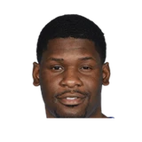

Dwight Howard:
“(Laughing) Stan (Van Gundy) used to get mad because I would have so much gas. It was like I didn’t have gas at home but I always had it when we had practice and especially when he talked. I used to always let it out.”
22 quotes about Stan Van Gundy from 18 players, coaches and executives, newest first. Each one links to its original source.
Dwight Howard:
“(Laughing) Stan (Van Gundy) used to get mad because I would have so much gas. It was like I didn’t have gas at home but I always had it when we had practice and especially when he talked. I used to always let it out.”
JJ Redick on Howard’s relationship with Stan Van Gundy:
“To be honest with you, it didn’t seem worse or better than any other year. Those two have built a relationship based on winning and before things really started to turn for us we were 32-18 and had the fifth best record in the league. So for 50 of the 66 games this year that relationship was pretty solid. “I’m not sure what happened and what transpired with management, with Dwight’s alleged request for Stan to get fired, I’m not privy to all the inside information. Certainly at some point that relationship started to change a little bit in March, and from that point on things got weird.”
Isiah Thomas:
“I’m giving Kyrie and Luka all of the offensive props and I ain’t disagreeing with [Stan] Van Gundy at all. I’ll put it to you this way. Joe and I were very good. Out of all of those guys y’all are naming, defensively we are the best. I will say that. And the numbers back it up. But Joe and I would have a hard time guarding Luka and Kyrie. I can tell you that much now. We’d have a hard time guarding them two jokers.”
What Stan Van Gundy has said about other players and coaches →

Adonis Thomas1 quotean emotional Howard explained during the ceremony.
“As I’ve said before, there is no Dwight Howard without Stan Van Gundy. You taught me what it means to stay ready.”
“And when I arrived, guys told me that with [Van Gundy] here things were different now.”
Antoine Walker:
“Stan [Van Gundy] was a screamer and a yeller. Not everyone responds to that,especially the veteran guys we had on our team. Stan was overemphasizing things that, with a veteran team, weren’t necessary. That was the separation. Stan bothered some guys with his delivery, and it just wasn’t the right fit. But to Stan’s defense, Shaq got hurt early in the season, and we started 10 and 10. That 10 and 10 start hurt Stan’s position, and eventually, Pat Riley had to step in.”
Isiah Thomas:
“I’m giving Kyrie and Luka all of the offensive props and I ain’t disagreeing with [Stan] Van Gundy at all. I’ll put it to you this way. Joe and I were very good. Out of all of those guys y’all are naming, defensively we are the best. I will say that. And the numbers back it up. But Joe and I would have a hard time guarding Luka and Kyrie. I can tell you that much now. We’d have a hard time guarding them two jokers.”
Daryl Morey on Stan Van Gundy's Embiid rant on TNT:
“That was like an Adam Corolla rant just turned on in the middle of the game. He clearly had scripted it too I was like what the heck is happening.”
Christian Clark:Brandon Ingram:
“Having Stan Van Gundy is going to challenge our mental toughness,but I think it's going to be good for us.”
Pels guardJJ Redick on his @OldManAndThree podcast on Stan Van Gundy hire:
“I think it’s an unbelievable hire. I had mentioned to Griff back in August that I thought he’d be great for the job. Think it’s the right guy for the right team at the right time.”
#Pistons Gores on Stan Van Gundy:
“We didn’t win but he didn’t underachieve. He did a good job for the time (he was here).”
The Pistons finished 39-43 and parted ways with coach Stan Van Gundy on Monday, and Jackson realizes that things could have been different if he had been able to play more.
“Being injured the past few years, I wish I could have done more and been healthy more to help us win games and to secure our future as a whole and (Van Gundy’s) future,”
Per Pistons owner Tom Gores on Stan Van Gundy:
“We have decided that this change is necessary to take our basketball organization to the next level. . . . Over the past two seasons our team has not progressed, and we decided that a change is necessary to regain our momentum.”
Blazers coach Terry Stotts on his response to Pistons coach Stan Van Gundy's comments last night about the Blazers' physical defense and non-calls:
“It could be the first time in my tenure that one of my teams was accused of being overly physical and holding and grabbing. So, yeah, I was pleased with those comments.”
Alex Kennedy:Adonis Thomas on DET:
“I really enjoyed Coach Van Gundy. He's a great coach - very straightforward and brings the best out of his players.”
“I look back at my career, and he’s one of the few coaches that really cared about me and held me accountable. When you’re young, you don’t realize that. I’ve been at home with my kids and my wife, and I’ve matured during that process. (Van Gundy) gave me a shot to come down here. I’m ready.”
He also knew he was getting something more when he talked to former Orlando Magic coach Stan Van Gundy.
“When I was talking about him with Stan Van Gundy, he said, 'You think you're getting a shooter, but you're shocked that you're going to get so much more,'”
Dwight Howard:
“(Laughing) Stan (Van Gundy) used to get mad because I would have so much gas. It was like I didn’t have gas at home but I always had it when we had practice and especially when he talked. I used to always let it out.”
Josh Robbins:Steve Kerr on TNT:
“If I need a coach, I’m getting on the phone with Stan Van Gundy. He is one of the best in the league.”
“I made sure they left this building understanding this team can beat us. As (Orlando coach) Stan Van Gundy said, 'You don't get two wins for a blowout.' We're very guarded about how good this team is.”
JJ Redick on Howard’s relationship with Stan Van Gundy:
“To be honest with you, it didn’t seem worse or better than any other year. Those two have built a relationship based on winning and before things really started to turn for us we were 32-18 and had the fifth best record in the league. So for 50 of the 66 games this year that relationship was pretty solid. “I’m not sure what happened and what transpired with management, with Dwight’s alleged request for Stan to get fired, I’m not privy to all the inside information. Certainly at some point that relationship started to change a little bit in March, and from that point on things got weird.”
Brendan Haywood:
“I was at home and I thought Stan Van Gundy was sitting there by the calendar because it was April 1st. I thought it was a big April Fools’ joke. I thought we were all going to laugh about it and all of a sudden I realized that he was serious. I was like okay well it is what it is. There’s nothing to it.”
So this is what Stern did instead: He reminded everyone that he was the boss.
“I would venture a guess that we’re not going to be hearing from [Van Gundy] for the rest of the season,”
“I actually am not going to talk to Stan Van Gundy. I’m going to talk to the ownership of the team.”
“That's kind of my take on it, is that eventually if things don't straighten out here soon, it could be the Van Gundy thing all over again.”